01 Physical inactivity
- Poor microcirculation
- Chronic inflammatory burden
- Hormonal imbalance
- Oxidative stress
- Greater scalp and follicle stress
Exercise × Skin–Hair Beauty
Beauty begins with biological balance
The visible condition of the skin reflects more than appearance. It is shaped by circulation, metabolism, neuroendocrine signaling, immune balance and the body’s capacity to adapt and recover.
A&S explores how appropriate exercise supports these interconnected biological systems—helping maintain skin vitality, resilience and healthy aging, while also contributing to a healthier scalp and hair environment.
Different inputs. One adaptive system.
Aerobic, resistance, interval and mind–body exercise challenge the body in different ways. Their biological influence depends not only on the type of movement, but also on how the exercise is performed and how effectively the body recovers.
Appropriate dose and recovery allow short-term physiological stress to become adaptive biological change.
Endurance
Strength
Intervals
Balance & flexibility
Intensity · Duration · Frequency · Progression
RecoveryMovement becomes biological communication
During exercise, changes in circulation, neuroendocrine activity, muscle signaling, neural communication and metabolism generate systemic signals that can reach distant tissues.
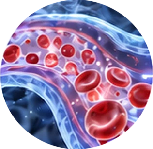
01Blood flow · Shear stress · Nitric oxide
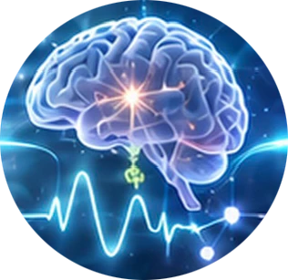
02Catecholamines · GH · Cortisol rhythm
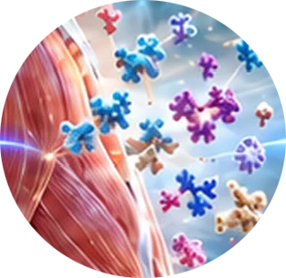
03IL-6 · Irisin · BDNF · IGF-1 · VEGF
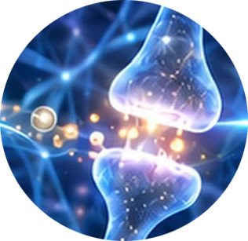
04Dopamine · Serotonin · Norepinephrine
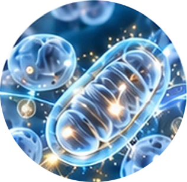
05AMPK · Ca²⁺ · Lactate · Mitochondrial biogenesis
Upstream signals prepare the body to adapt
Exercise is translated across interconnected biological networks
Exercise-related signals do not act in isolation. Circulatory, neural, endocrine, immune and metabolic networks integrate these responses and transmit their influence to distant tissues—including the skin.
Circulatory · Neuroendocrine · Myokine · Neural · Metabolic
Brain · Hypothalamus · Autonomic and endocrine coordination
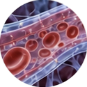
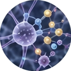
Bloodstream · Neuroendocrine axes · Immune–metabolic communication
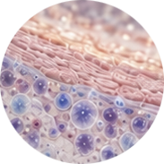
Perfusion · Cellular signaling · Homeostatic regulation
Exercise-related signals support core biological functions
When systemic signals reach the skin, they may influence the biological conditions that maintain barrier integrity, cellular renewal and dermal structure. These effects reflect regulation and adaptation—not an immediate cosmetic transformation.
Systemic exercise signals
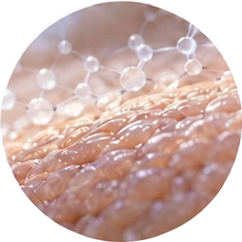
01Lipid synthesis · Tight-junction support
TEWL regulation · Hydration
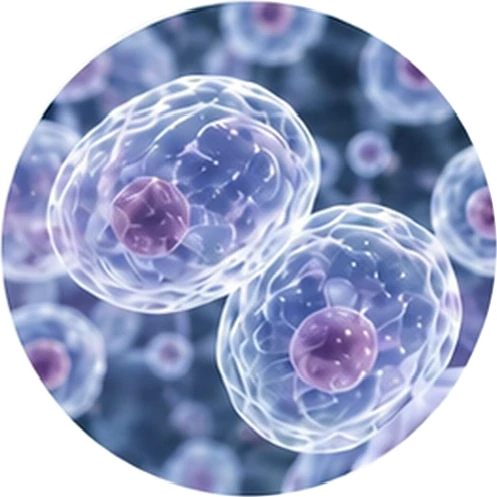
02Keratinocyte proliferation · Turnover
DNA repair and protection · Mitochondrial function
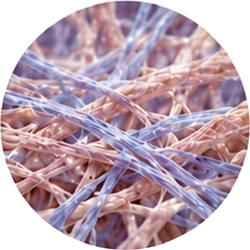
03Collagen I & III synthesis · Elastin integrity
ECM remodeling balance · Fibroblast activity
Systemic adaptation shapes the skin microenvironment
Exercise-related adaptation may help create biological conditions that support inflammatory control and more stable pigment regulation. These responses depend on exercise dose, recovery, environmental exposure and individual biology.
Systemic adaptation
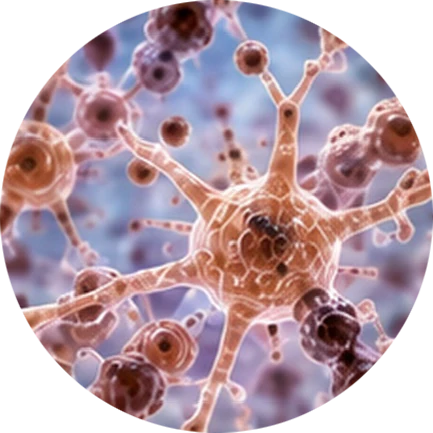
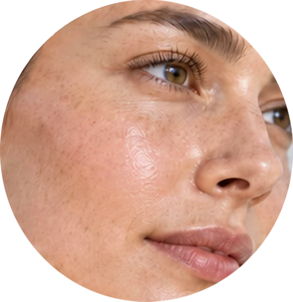
What we see at the surface begins with underlying function
When barrier stability, cellular renewal, dermal structure, inflammatory control and pigment regulation are better maintained, the skin may appear more hydrated, smooth, firm, radiant and even-looking.
Supported skin biology
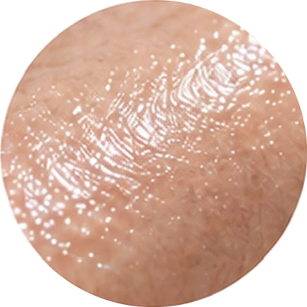
01Better water retention
Hydrated, plump-looking skin
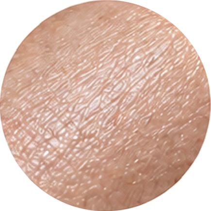
02Improved surface integrity
Smoother-looking texture
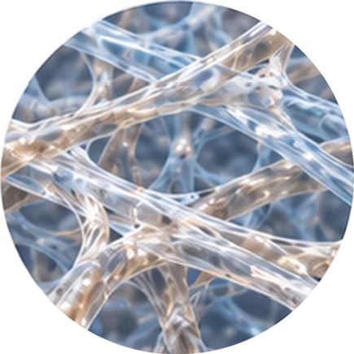
03Supported collagen and elastin
More resilient-looking skin
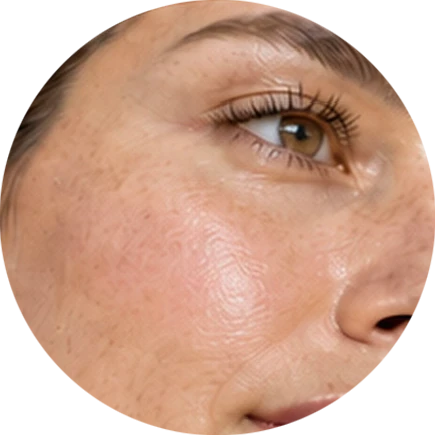
04Improved microcirculation and regulation
Less dullness and visible redness
Maintaining resilience, repair and structural integrity over time
Healthy skin aging is not the absence of time. It reflects the capacity of the skin to withstand stress, maintain structure, repair damage and recover biological balance. Appropriate exercise may help preserve these functions through systemic adaptation.
Regular exercise
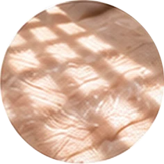
Supports protection from photoaging and oxidative damage
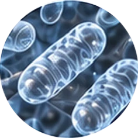
Helps preserve mitochondrial and cellular function
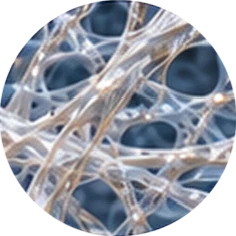
Supports collagen, elastin and extracellular-matrix maintenance
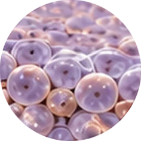
Helps maintain the capacity to adapt and recover
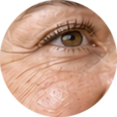
May contribute to a slower development of visible aging signs
Healthy skin aging
Systemic adaptation may support the follicle environment
Hair responses are indirect and multifactorial. By influencing circulation, metabolic regulation, stress balance and inflammatory tone, appropriate exercise may help support the biological environment in which follicles and scalp tissues function.
Scientific note: Exercise does not directly treat hair loss; outcomes also depend on genetics, hormones, nutrition, health status and recovery.
Microcirculation · Oxygen & nutrient delivery · Neuroendocrine balance · Inflammatory control · Mitochondrial support
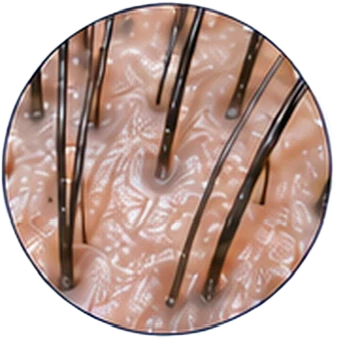
01May support a stable growth-cycle environment
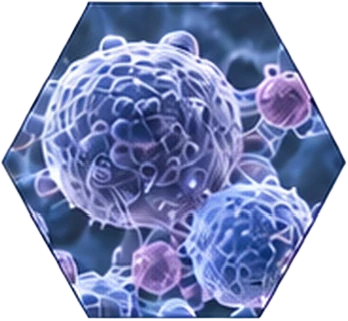
02IGF-1 and VEGF signaling · Regenerative capacity
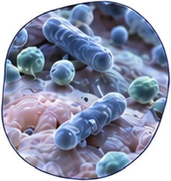
03Barrier function · Sebum and pH balance · Inflammatory control
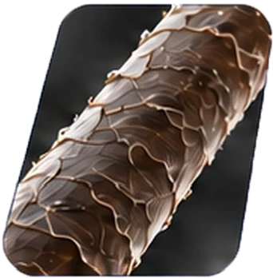
04Fiber integrity · Oxidative protection · Pigment maintenance
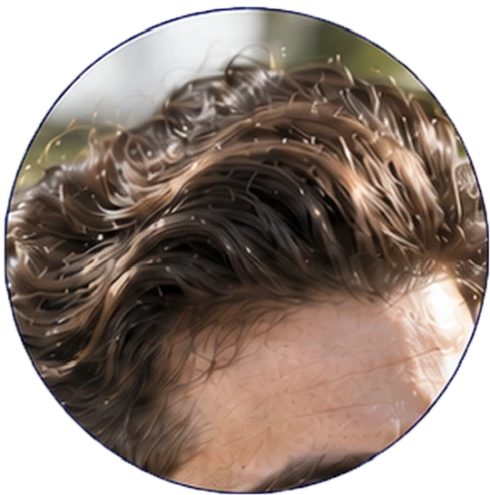
Stable-looking growth · Lower shedding susceptibility · Improved density appearance · Stronger-looking fiber and shine · Healthier scalp condition
Biological support depends on the balance between challenge and restoration
Exercise is a biological stressor. Within an adaptive range, it may support systemic regulation; when recovery is inadequate, excessive load may increase physiological stress and compromise the follicle and scalp environment.
Optimal adaptation zone Supports hair–scalp resilience
Biological benefits depend on the balance between challenge and restoration
Exercise is a biological stressor. When the dose is appropriate and recovery is sufficient, short-term physiological stress can become adaptive change. Too little activity provides limited stimulus, while excessive training without recovery may shift the body away from homeostasis.
Physical inactivity or low activity
Limited circulatory and metabolic challenge
Higher chronic inflammatory burden
Appropriate challenge + sufficient recovery
Supports homeostasis, repair and resilience
Disrupted cortisol rhythm
Increased oxidative and inflammatory stress
Immune and nutritional strain
Intensity · Duration · Frequency · Progression
Sleep · Nutrition · Stress regulation · Rest